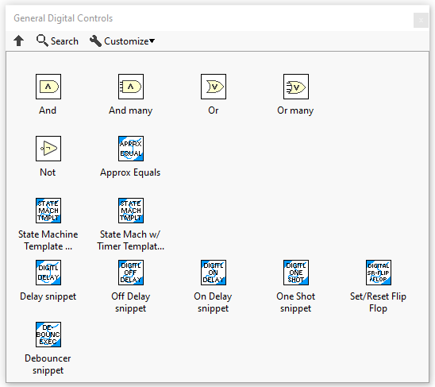
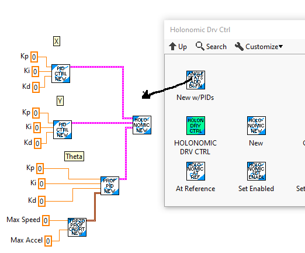

Description and Conventions
Function Naming
The VI in this library are grouped into categories mostly according to functionality. The VI file
name starts with the group name followed by a suffix describing the function of the particular VI.
Since this library was patterned after the C++/Java version of the WPILIB, many of the group names are
similar to their C++/Java counterpart. As such, those familiar with the C++/Java library should be
able to use this library fairly easily. Also, while these functions are fully documented, the C++ or
Java documentation will mostly describe this library as well.
The HTML and PDF reference documentation for the library is organized by these function groups.
"Execute" Functions
In order simplify engineering control systems with LabVIEW and this library, additional functions
providing the all the functionality of a function group in a single VI have been provided for most
function groups. The names of these VI end with the "_EXECUTE" suffix. For many function groups
they may be the only function that is needed.
In some cases where the number of inputs to a function is large, helper functions have also been
provided that feed the "_EXECUTE" function all the needed data.
The following picture shows the "_EXECUTE" function for the Advanced PID Function".

Function Menu
Menu items for all the subVI's are included as part of the standard LabVIEW WPI Robotics Library menu

The functions anticipated to be the most used have been gathered into general sub-menus located at
the top of the main menu.

Below are the Analog, Digital (boolean), and Trajectory general menus



Function Snippets
To make the functions easier to use, a number of the menu items place "snippets" of code that includes the desired function and other functions or constants often wired to the function. Menu item icons for snippets use a unique background color. Unless the name is too long, the menu item name ends with "snippet".
The "general" function sub-menus are all snippets.
The following shows an example of a “snippet”.
Function Help
Each VI includes help that can be accessed using the standard LabVIEW help toggle (Ctrl H).

Function Examples
Many of the functions have examples that can be found under the LabVIEW "Find examples..." function.
(Help -> Find Examples...). The function examples are easiest to find when "Directory Structure" is
selected.

There are additional function samples, robot samples, and dashboard samples here: https://github.com/jsimpso81/WPIlibMathLabVIEW_Examples